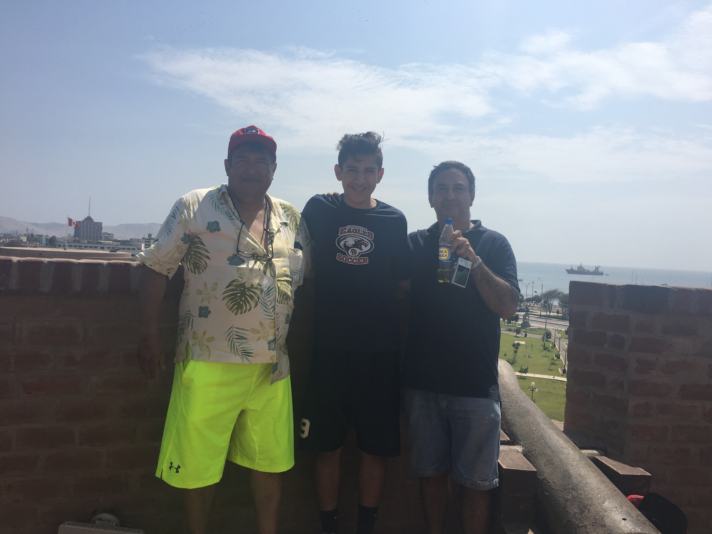
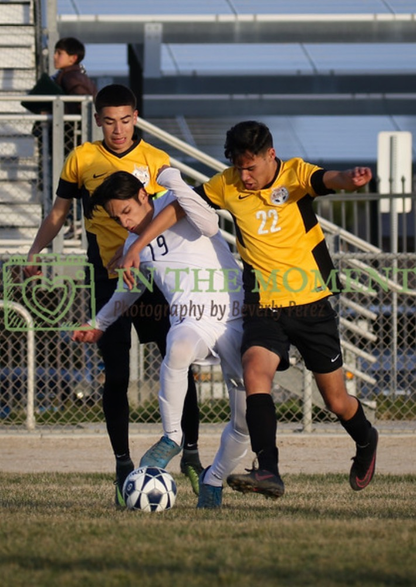

Home
Portfolio
About me
Vocab
About ME


My name is Josh Gonzalez. I was born in peru and moved to the united states when I was five years old. I've played soccer my etire life and when I was 13 I had went back to peru for a whole year to play in their U13 division country team and i got to play against other coun tries in south america like brasil, chile, argetina and etc. I even got to go to these countries and learned to get even better in soccer. However when I was 14 I had a serious enjury to my lower back which caused me to stop playing soccer for awhile. I still play today but becasue I had to take such a long break and I still have lower back pain that I have to deal with everyday. I have 6 siblings and out of all of them I am the youngest also the best soccer player. I have 3 older brothrs and 2 older sisters and there was never a boring moment growing up with them because since I was the smallest that means I was always the test monkey when we all wanted to try something new and dangerous and fun. The funny thing is now that I am have gotten older and taller I ended up becoming the tallest out of everyone, we don't play games like we used to since they're all going to college but every once in a while when they come over its like we're stilll all little kids.